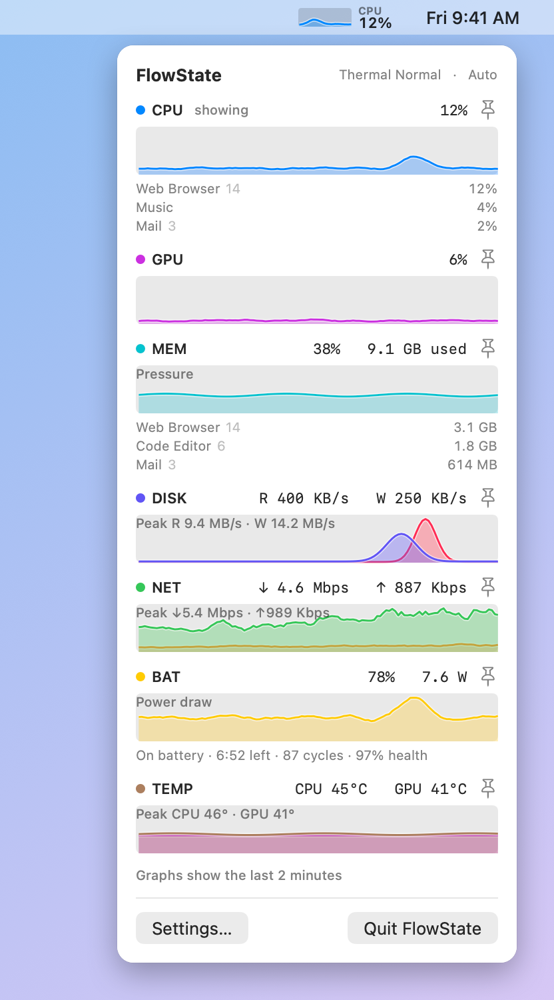
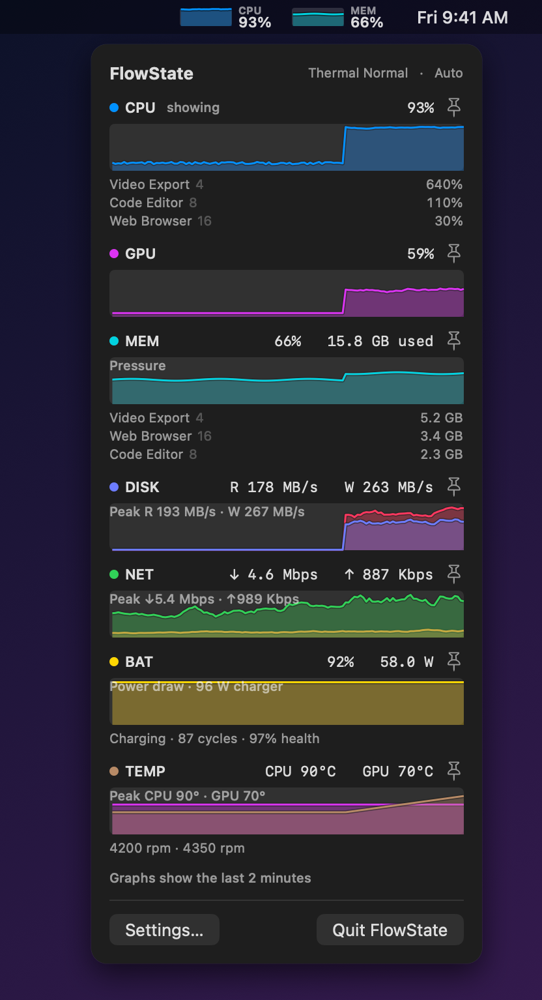
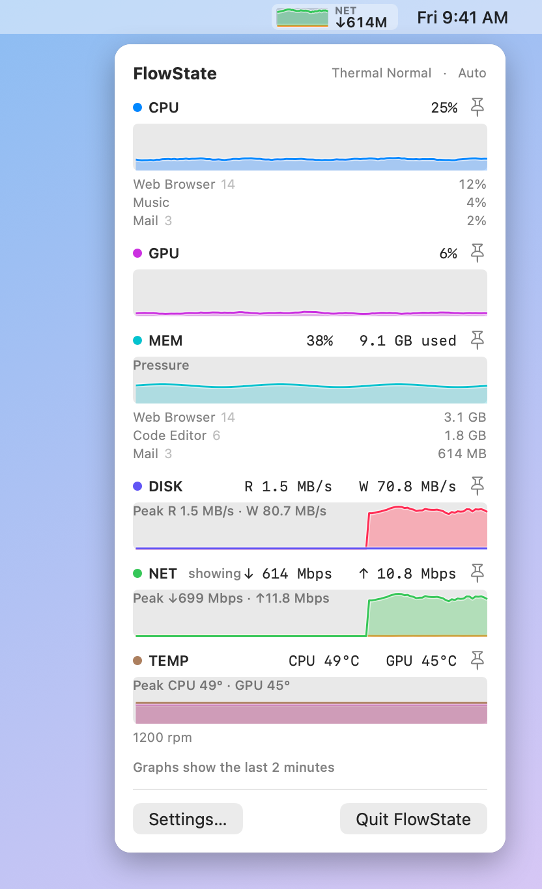
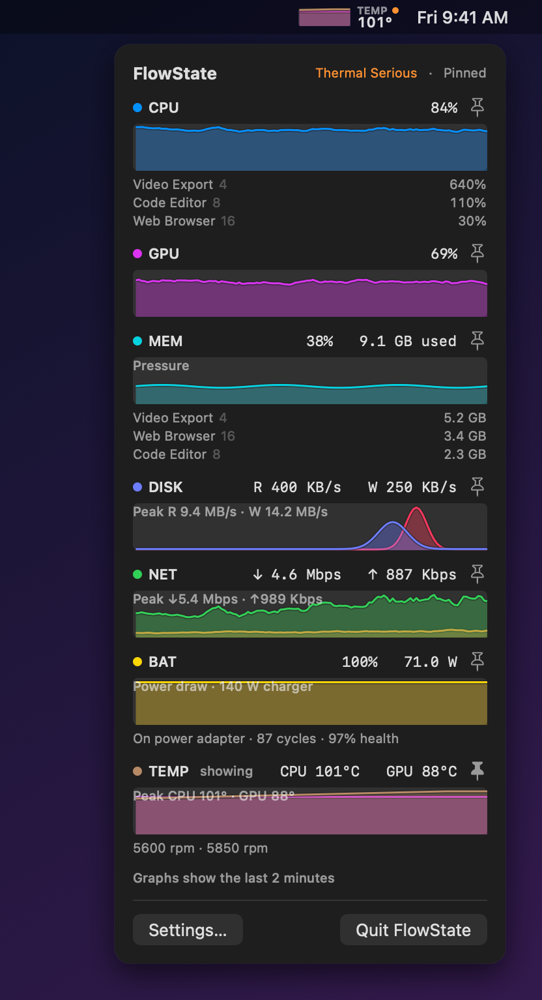
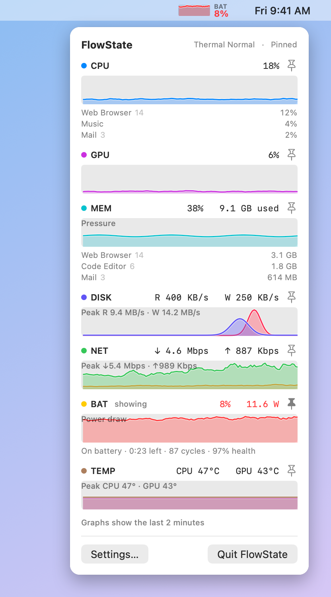
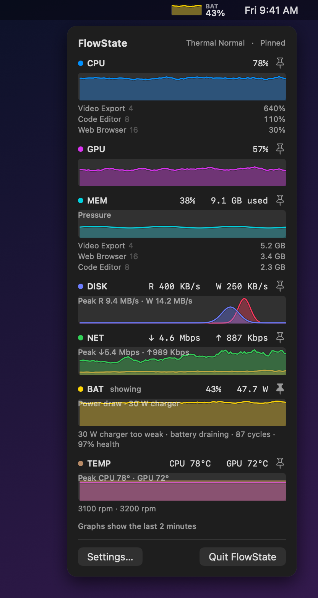

macOS Menu Bar App • v1.1.1
FlowState
A small system monitor that lives in your menu bar and shows whatever is busiest right now.
Screenshots
-

An ordinary day
-

CPU spike, with a second metric in the menu bar
-

Auto-switched to network during a big download
-

Thermal throttling
-

Low battery
-

A charger too weak to keep up
{kind=link}
{kind=link}
{kind=link}
{kind=link}
{kind=link}
{kind=link}
Why FlowState
Most system monitors make you pick one number to watch. FlowState graphs CPU, GPU, memory pressure, disk, network, battery, and temperature, and puts whichever one is busiest in the menu bar. Click it for two-minute graphs of everything and the top processes.
- Auto-Switching Menu Bar Graph: Shows the busiest metric right now, or pin one from the right-click menu.
- Make It Yours: Add a second metric to the menu bar, choose graph and/or value display, and reorder or hide metrics.
- Useful Notifications: Sustained high CPU, critical memory pressure, thermal throttling, low battery, and a charger too weak to keep up.
- Deal With Runaway Apps: Quit, force quit, or reveal the apps using the most CPU and memory.
- Stays Out of the Way: About 0.25% of one core when idle, no network access, nothing collected.
Install
- Unzip and move FlowState.app to your Applications folder.
- Open it. macOS will say it can't be opened, because the app isn't notarized by Apple.
- Go to System Settings > Privacy & Security, scroll down to the message about FlowState, and click Open Anyway. This is only needed once.
FlowState has no Dock icon or main window. Look for the graph in the menu bar; Settings and Quit are in its right-click menu, and launch at login is in Settings.
Hardware note: FlowState has only been run on the author's Mac. Sensors differ between chips, so on other hardware a metric (most likely temperature or GPU) may show as unavailable. Metrics a Mac doesn't have, such as battery on a desktop, are hidden.